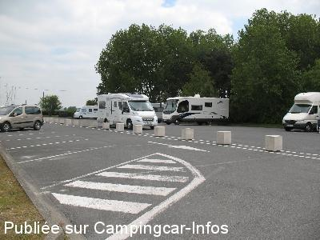
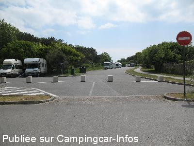
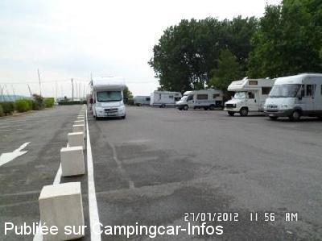
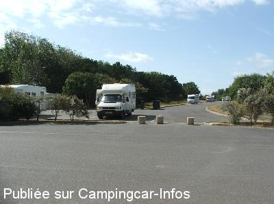
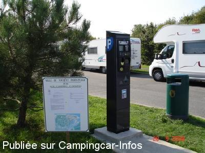

ASN = Aire de services avec stationnement nuit possible de :
LE TOUQUET PARIS PLAGE
(N° 367)
Accès/adresse :
Avenue Jean Ruet
Parking du club nautique
62520 LE TOUQUET PARIS PLAGE
Parking du club nautique
62520 LE TOUQUET PARIS PLAGE
Latitude : (Nord) 50.53573° Décimaux ou 50° 32′ 8′′
Longitude : (Est) 1.59331° Décimaux ou 1° 35′ 35′′
Tarif : 2016
Stationnement : 15 €
Services, électricité : 2 €
Paiement par carte bancaire
Type de borne : EURO-RELAIS
Services :


Autres informations :
Emplacements asphaltés
Trappe au sol à lever pour vidanger les WC
Tél Office du Tourisme : +33(0)321 067 200

Le 28/06/2013 par André B

Le 28/06/2013 par André B

Le 29/07/2012 par philippe.59

Le 09/10/2009 par Ralph

Le 22/09/2008 par philippe.dubois160
de
Jérôme
le 16/03/2015 :
Aire propre avec une belle vue sur l'estuaire de la Canche. Emplacements spacieux. C'est cher (13€/24h): pas de branchement électrique en continu possible seulement un point électricité (2€/55 min). A ce prix là, autant aller sur un camping ACSI où le branchement en continu est compris. Cependant, l'aire est bien située par rapport au Touquet : on peut rejoindre la ville en toute sécurité à pied ou en vélo à travers dunes.
Aire propre avec une belle vue sur l'estuaire de la Canche. Emplacements spacieux. C'est cher (13€/24h): pas de branchement électrique en continu possible seulement un point électricité (2€/55 min). A ce prix là, autant aller sur un camping ACSI où le branchement en continu est compris. Cependant, l'aire est bien située par rapport au Touquet : on peut rejoindre la ville en toute sécurité à pied ou en vélo à travers dunes.
de
hidena86
le 04/10/2014 :
Septembre 2014
Aire bien placée , propre, asphaltée ,centre ville accessible a pieds , 13 euros pour 24h plus 2 euros pour l'eau . C'est le prix d'un camping ACSI qui comprend les wc et les douches .
Septembre 2014
Aire bien placée , propre, asphaltée ,centre ville accessible a pieds , 13 euros pour 24h plus 2 euros pour l'eau . C'est le prix d'un camping ACSI qui comprend les wc et les douches .
de
jiji02
le 21/09/2014 :
Aire propre, bien située,un peu loin du centre, nombreuses pistes, bien pour les sportifs, une partie de la borne ne fonctionnait pas, 13€ les 24h.
j'ai bien aimé
Aire propre, bien située,un peu loin du centre, nombreuses pistes, bien pour les sportifs, une partie de la borne ne fonctionnait pas, 13€ les 24h.
j'ai bien aimé
de
Bovy André
le 30/06/2013 :
Aire bien située, sécurisante, asphaltée, proche de la mer. Beaucoup de promenades pédestres et à vélo. 11 €/24 h. Dommage le robinet de rinçage WC ne fonctionnait pas.
Aire bien située, sécurisante, asphaltée, proche de la mer. Beaucoup de promenades pédestres et à vélo. 11 €/24 h. Dommage le robinet de rinçage WC ne fonctionnait pas.
de
le 18/02/2013 :
§ Pour info, le stationnement est passé à 11€ les 24h et toujours rien en plus....
§ Pour info, le stationnement est passé à 11€ les 24h et toujours rien en plus....
de
Anne Xavier
le 30/07/2012 :
Nous avons bien aimé toutes les marches à pieds que nous avons pu faire au Touquet-Paris-Plage,très belle ville,très propre,pas de barrières pour délimiter les terrains,agréable à visiter;si vous passez par là-bas,arrêtez-vous pour visiter,vous ne perdrez pas votre temps.
Par contre,lors de notre passage,la borne n'était pas endommagée,mais ne fonctionnait pas,donc,pas d'eau,pas d'électricité,pour l'eau,il fallait aller à l'autre aire,au niveau du centre équestre.
Si la borne avait été en état de marche,nous serions restés une journée de plus.
Nous avons bien aimé toutes les marches à pieds que nous avons pu faire au Touquet-Paris-Plage,très belle ville,très propre,pas de barrières pour délimiter les terrains,agréable à visiter;si vous passez par là-bas,arrêtez-vous pour visiter,vous ne perdrez pas votre temps.
Par contre,lors de notre passage,la borne n'était pas endommagée,mais ne fonctionnait pas,donc,pas d'eau,pas d'électricité,pour l'eau,il fallait aller à l'autre aire,au niveau du centre équestre.
Si la borne avait été en état de marche,nous serions restés une journée de plus.
de
SPECULOOS 62
le 13/07/2012 :
§
nous avons constaté le week end dernier que la moitié de l'aire face à la base nautique est devenue un parking pour voitures et le tarif est passé à 9,50 euros.... très décue de cette initiative du touquet !
§
nous avons constaté le week end dernier que la moitié de l'aire face à la base nautique est devenue un parking pour voitures et le tarif est passé à 9,50 euros.... très décue de cette initiative du touquet !
de
jean
le 27/01/2012 :
grandes et belle aires propres bien situé pour balade en vélo, pédestre... pour le centre ville bonne marche à pieds... dommage que pour le prix , un plein d'eau ne soit pas compris dedans
grandes et belle aires propres bien situé pour balade en vélo, pédestre... pour le centre ville bonne marche à pieds... dommage que pour le prix , un plein d'eau ne soit pas compris dedans
de
didier
le 15/01/2010 :
Bonsoir ! Personnellement, je passe souvent sur cette super aire ! J'ai toujours trouvé de la place, même en plein été !! Et je trouve le prix tout à fait honnête pour la qualité, la tranquillité et c'est un endroit superbe !
Bonsoir ! Personnellement, je passe souvent sur cette super aire ! J'ai toujours trouvé de la place, même en plein été !! Et je trouve le prix tout à fait honnête pour la qualité, la tranquillité et c'est un endroit superbe !
de
Ralph
le 09/10/2009 :
Stayed here 2 nights September 2009. In my opinion this is the best of the 2 Le Touquet aires. You can pay by credit card which is very handy. When I was there the tickets were inspected by the local police at around 18:00 each day.
Stayed here 2 nights September 2009. In my opinion this is the best of the 2 Le Touquet aires. You can pay by credit card which is very handy. When I was there the tickets were inspected by the local police at around 18:00 each day.
de
Burette E
le 12/04/2009 :
Je viens de passer la semaine sur cette aire très agréable et proche de la ville. Nous y avons fait de belles promenades en vélo sur de très belles pistes cyclables pour faire de belles balades. Pendant notre séjour, de nouveaux aménagements étaient en cours pour rendre le site encore plus agréable. J'y retournerai.
Je viens de passer la semaine sur cette aire très agréable et proche de la ville. Nous y avons fait de belles promenades en vélo sur de très belles pistes cyclables pour faire de belles balades. Pendant notre séjour, de nouveaux aménagements étaient en cours pour rendre le site encore plus agréable. J'y retournerai.
de
dan
le 13/07/2008 :
Arrivé tôt dans l'après-midi pour être sûr d'avoir une place. Estuaire très sympa surtout au moment de la voile. D'autre part, il existe une navette gratuite qui part de l'aire et vous mène en ville. Autre astuce pour les novices du CC, coller votre ticket de parking sur la vitre
Arrivé tôt dans l'après-midi pour être sûr d'avoir une place. Estuaire très sympa surtout au moment de la voile. D'autre part, il existe une navette gratuite qui part de l'aire et vous mène en ville. Autre astuce pour les novices du CC, coller votre ticket de parking sur la vitre